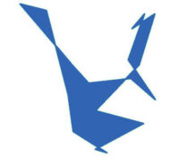
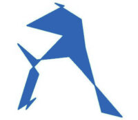

Épitaphe
Gematriot pour une tournée d'harmonisation
'Heshvan 2024
Temps de lecture : 25 minutes
- Synthèse générique
- Liste des horodatages
- 12.10@23:32 - La Torah développe la compassion en plus du savoir
- 12(13).10@15:51 - La Torah met un terme aux crimes des méchants
- 13.10@22:03 - La Torah éduque, répare et soigne ou réadapte sans blesser
- 13(14).10@19:59 - La Torah fusionne les destins du couple en Shalom Bayit
- 13(15).10@15:36 - La convoitise est la source des nuisances volontaires
- 15.10@22:17 - La Torah est la bénédiction pour le monde contre la malédiction
- 15(16).10@16:26 - La Torah dévoile les crimes pour sauver les victimes
- 17.10@22:38 - L'affiliation via l'étude pratique de la Torah fait de soi un affilié
- 17(18).10@13:41 - Chaque technologie majeure est un moyen de diffuser la Torah
- 18.10@22:10 - La parole de la Torah met en déroute et dépouille les méchants
- 18(19).10@11:57 - La somme des oeuvres de Torah forme le déluge entre éons
- 19.10@21:36 - La Torah fait peur au mal car les mitsvot le retranchent du monde
- 19(20).10@17:13 - La convoitise réduit la santé et le temps de vie des victimes
- 20.10@23:37 - Les enseignements malveillants engendrent méchancetés et crimes
- 20(21).10@14:41 - L'éternel Son de la Torah est Sa preuve de véridique bonté
- 20(22).10@12:40 - La Torah est donnée à ceux qui souffrent pour libérer la peine
- 22.10@21:18 - La Torah est plus puissante que toute association psychopathique
- 22(23).10@15:34 - Les méchants éteignent la joie de vivre par la souffrance mortelle
- 23.10@22:49 - L'étude des textes sacrés nécessite avant tout la ferveur
- 23(24).10@22:20 - L'étude du sens des lettres hébraïques procure la science sacrée
- 25.10@22:52 - La Torah améliore l'être humain lentement et surement
- 25(26).10@14:29 - Le peuple de la Torah est plus fort que les crimes des méchants
- 26.10@20:55 - La Torah permet de surmonter le dévoilement de la bénédiction
- 26(27).10@15:19 - Les mitsvot de la Torah sont la plus haute action de justice
- 27.10@21:40 - La Torah se transmet par les lignées intellectuelles et physiques
- 27(28).10@13:27 - Le don de la Torah est selon la nature du coeur
- 29.10@22:19 - Les mitsvot de la Torah permettent l'exfiltration des captifs
- 29(30).10@15:59 - La Torah dévoile la véritable nature de l'être humain
- 30.10@21:28 - La Torah procure la maîtrise convenable des pensées et des actes
- 30(31).10@18:17 - La Torah orale est inséparable de la Torah écrite
- 01.11@22:52 - La Torah est la compensation de l'expatrié spirituel
- 02.11@23:58 - La Torah est la plus grande source de joie dans la vie
- 02(03).11@12:13 - La Torah façonne la maturation des pulsions vers le bien
- 02(03).11@19:36 - La Torah s'oppose aux crimes des méchants
- 03.11@22:03 - Le Shalom Bayit est ce qu'il y a de plus puissant après HaShem
- Abrégé total des cadences mélodiques
Synthèse générique
Énoncés du couple
Ces gematriot résument d'une certaine manière le Shidouk pour le Béréshit-Israël :
L'étudiant a maîtrisé l'amour du coeur.
Il a acheté une Torah,
Je mettrais fin aux méfaits des méchantsParce que ce qui est nuisible doit cesser.
L'entrelacement des flux fusionne les destins du couple en Shalom Bayit.
Le folie draine par convoitise.
Lorsque enceinte, la bénédiction se répandra
De la même manière qu'ils ont torturé lui.
Le fils a parlé et expulsé le mal comme un affilié à la Torah.
En tant qu'associé de la Torah,
Il a tapé sur des touches d'ordinateur pour étudier et publier.Le pouvoir dirigeant souffrira de la vérité.
Les partisanes de la Torah ont déversé leurs témoignages.
Lorsque écartés après avoir été jugés mauvais,
Les dirigeants seront effrayé.L'avidité des méchants épuise l'initiative des victimes
À cause de la perversité des mauvais enseignements.
Le son de la Torah a précédé le premier cours de Torah
À cause de la source du gémissement.
Il a diffusé la Torah et le témoignage,
Il a inspiré la crainte aux méchants.Le flétrissement de la joie de vivre, il a engendré la lamentation.
Il a absorbé la connaissance des écritures avec ardeur.
Pour révéler le sens du sacré, il a combiné les lettres.
La Torah a élevé et guidé avec douceur.
Il a été montré la puissance du vrai peuple d'Israël,
Il s'est dressé contre les méchants imposteurs menteurs voleurs tueurs,
Bénédiction de HaShem.Alors pour toi, surmonte l'inquiétude
Parce que décret de justice pour te sauver des réchaïm,
Il a été obtenu par les tribus du vrai IsraëlPour souvenir de moi
Selon la nature du coeur
Dans le but d'exfiltrer un roi.
Le mystère est dévoilé au sujet de Yah
(feu par friction qui engendre la brillance).La Torah est la Matrice qui Enveloppe et Soutien la Puissance du Savoir.
La Matrice de la Vie est Libérée par la Parole du Chef.
Réconfort du fils épuisé.
Il sera protégé et défendu lorsque rempli de joie.
Il obtiendra la paix et la joie selon la force de HaShem Torah.
La souffrance causée par les méchants s'oppose à la vie.
Avec en tant que le Tout-puissant.
Il a oscillé et il a transmis parce que il a étudié la Torah.
Formules de Torah
Ainsi que la Torah de HaShem qui orchestre les Shidoukim :
La Torah développe la compassion en plus du savoir.
La Torah met un terme aux crimes des méchants.
La Torah éduque, répare et soigne ou réadapte sans blesser.
La Torah fusionne les destins du couple en Shalom Bayit.
La convoitise est la source des nuisances volontaires.
La Torah est la bénédiction pour le monde contre la malédiction.
La Torah dévoile les crimes pour sauver les victimes.
L'affiliation via l'étude pratique de la Torah fait de soi un affilié.
Chaque technologie majeure est un moyen de diffuser la Torah.
La parole de la Torah met en déroute et dépouille les méchants.
La somme des oeuvres de Torah forme le déluge entre éons.
La Torah fait peur au mal car les mitsvot le retranchent du monde.
La convoitise réduit la santé et le temps de vie des victimes.
Les enseignements malveillants engendrent méchancetés et crimes.
L'éternel Son de la Torah est Sa preuve de véridique bonté.
La Torah est donnée à ceux qui souffrent pour libérer la peine.
La Torah est plus puissante que toute association psychopathique.
Les méchants éteignent la joie de vivre par la souffrance mortelle.
L'étude des textes sacrés nécessite avant tout la ferveur.
L'étude du sens des lettres hébraïques procure la science sacrée.
La Torah améliore l'être humain lentement et surement.
Le peuple de la Torah est plus fort que les crimes des méchants.
La Torah permet de surmonter le dévoilement de la bénédiction.
Les mitsvot de la Torah sont la plus haute action de justice.
La Torah se transmet par les lignées intellectuelles et physiques.
Le don de la Torah est selon la nature du coeur.
Les mitsvot de la Torah permettent l'exfiltration des captifs.
La Torah dévoile la véritable nature de l'être humain.
La Torah procure la maîtrise convenable des pensées et des actes.
La Torah orale est inséparable de la Torah écrite.
La Torah est la compensation de l'expatrié spirituel.
La Torah est la plus grande source de joie dans la vie.
La Torah façonne la maturation des pulsions vers le bien.
La Torah s'oppose aux crimes des méchants.
Le Shalom Bayit est ce qu'il y a de plus puissant après HaShem.
La vibration de l'amour transmis par la Torah provient de l'étude.
Liste des horodatages
12.10@23:32 - La Torah développe la compassion en plus du savoir
233222 ⇒ 2-332-22 ⇒ כבש לבב ⇒ כב-שלב-ב
Il a maîtrisé amour du coeur.
- Grâce à la Torah et aux mitsvot qui cultivent l'étudiant, la doctrine hébraïque dans toutes les langues développe la compassion ainsi que la bienveillance, et pas seulement les connaissances et les pouvoirs de la parole du corps et des groupes.
- La maîtrise de l'amour du coeur, dans le contexte de l'étude de la Torah, ne se mesure pas à une connaissance encyclopédique ou à une compréhension exhaustive de chaque détail, mais à la manière dont les principes fondamentaux sont intégrés jusqu'à modeler de manière bénéfique sa propre vie et son destin, notamment à travers l'amour du HaShem de Elohim et de la Torah, pour soi-même et pour les autres, indépendamment des capacités, des pouvoirs et des ressources.
- Ce sont les fausses traductions et les mauvaises interprétations du regard pervers que portent les méchants sur les lois, sur le monde et sur autrui, avec leurs calomnies, leurs mensonges et leurs discussions pour faire passer le bien pour le mal et inversement, qui trahissent l'humanité et ses bonnes lois ainsi que la santé, le travail, la justice, la paix, la Bible, l'Évangile, le Quran, les Sutras, etc. C'est-à-dire la science sacrée et toutes les disciplines des arts et métiers, dans le seul but de duper les ignorants et de fabriquer des victimes à assujettir, à torturer et à mutiler pour le profit et le plaisir.
12(13).10@15:51 - La Torah met un terme aux crimes des méchants
155122 ⇒ 155-1-22 |⇒ 22-1-155 ⇒ קנה אכב ⇒ קנה-א-כב
Il a acheté (se procurer, acquérir) [une Torah],
Je mettrais un terme [aux méfaits des réchaïm].
- Acheter ou se procurer et acquérir : tout celui ou celle qui étudie la Torah écrite qu'il ou elle a acheté, jusque dans chaque pixel de chaque lettre de chaque mot de chaque verset, à la lumière des enseignements des rabbins et des rabbanites de la génération et des générations passées qu'il ou elle écoute et lit, il ou elle acquiert sa Torah selon son prisme personnel, devenant "une nouvelle facette unique sur la surface plurielle du diamant infini et éternel entourant le coeur de l'unicité de la Doctrine", tout comme les témoignages de l'observation d'une maison sous divers angles sont partiels et complémentaires d'une seule et même chose.
- On peut considérer que א-כב est le futur de la première personne singulière de כבה qui signifie "éteindre une machine ou une lampe, mettre dehors, expulser", donc ici selon le contexte initial il s'agit de mettre un terme et arrêter ce qui est en cours, soit mal causé à la victime, et plus encore, grâce aux mitsvot et à la loi du pays.
- Grâce à l'étude de la Torah orale et écrite, à l'amélioration des midot, aux témoignages, et aux publications, les vilains de l'éon actuel seront retranchés par HaShem pour stopper le mal causé au monde entier, c'est-à-dire que leur idéologie sectaire malveillante dont sont victimes les étudiants et quantité de non-étudiants, ainsi que leurs oeuvres, seront oubliées par les générations futures, car considérées comme nuisibles et abjectes, grâce aux lois de l'univers et de la vie agissant pour le bien des nations, et ce pour des éons.
13.10@22:03 - La Torah éduque, répare et soigne ou réadapte sans blesser
220323 *2 ⇒ 440646 ⇒ 440-646 ⇒ ו-מם מת ⇒ ומם-מת
Parce que [ce qui est] nuisible (défectueux, inadapté)
[doit] cesser (disparaitre, mourir au sens figuré).
- Les actes volontairement nuisibles et les mauvais comportements ne sont pas souhaitables en civilisation, c'est un consensus universel sur les lois du collectif humain au sein des nations depuis la nuit des temps, même si ceux qui dirigent sont malveillants.
- Les cours des rabbins sur les peines à appliquer envers les méchants en plus d'aider et de soigner les victimes, expliquent que la vraie justice exclue toute forme de châtiment et blessure même envers un meurtrier, sachant que lorsqu'on fait dire à la loi hébraïque qu'il est question de flagellation, de lancer de pierres et de mise à mort, il s'agit exclusivement d'abstractions imagées de processus non physiques qui sont relatives aux mêmes effets mais sur le mental et le coeur de la personne ou du groupe condamné : réprimande avec la parole, éducation avec des explications et thérapie cognitive pour améliorer les comportements.
- Concernant la fausse loi du talion de l'esprit cruel nommée "oeil pour oeil" et qui n'existe pas dans la Torah ni dans le Quran ou n'importe grand texte sacré solvable, se référer au livret "L'alliance" où il est expliqué que "ton œil n'aura pas pitié : une âme avec une âme, un œil avec un œil, une dent avec une dent, une main avec une main, un pied avec un pied" doit se comprendre "avoir de la compassion pour unir deux êtres selon la sincérité des coeurs, le partage de la vision, la force de l'investissement, la tendresse des actes et la liberté de la marche commune" : ce qui est faire faire un Shidouk à un homme pour le sauver des malfaiteurs et le former à la Torah afin de construire avec sa future femme un Shalom Bayit en vertu des lois de la Torah et notamment de Mishlei 31 pour ce qui concerne ce sujet.
- Concernant la racine Mout "mourir, faire mourir" il a été dit dans le livre "Le problème religieux" : le verbe Resh-Tsadi-'Het (Ratsa'h) est tuer la vie 'Het-Youd dont le 'Het placé au début de ce mot est placé à la fin du verbe tuer pour marquer la mise au terme de la vie, le meurtre, et le bien étant la vie, c'est tuer le bien, et le Resh étant celui du mal Ra, tuer le bien et la vie, ce qui manque au mal, c'est mal ; la racine Mem-Vav-Tav (Mout) est mettre à mort le mal qui est le mécanisme meurtrier, et non l'être lui-même qui a causé l'acte, car le Tav est ce qui est complet, et ce qui est complet est ce qui est en harmonie, ce qui est juste et bien, et le mal étant la mort, et comme mort et faire mourir ont la même racine hébraïque pour montrer que c'est le mal qu'il faut mettre à mort, puisque le Tav en fin du verbe indique que mettre un terme au bien, c'est mal, alors faire mourir le mal, les comportements et les actions qui contaminent et altèrent le bien, c'est bien.
13(14).10@19:59 - La Torah fusionne les destins du couple en Shalom Bayit
195923 /⇒ 23-1959 ⇒ 23-19-59 ⇒ טן טי כ ג ⇒ טן-טי-כג
Le tissage (entrelacement) des flux (vagues) courbe le destin (mouvement).
- Outre les interactions verbales et corporelles, des flux électromagnétiques sont émanés de l'activité des câble nerveux et sanguins, ainsi que des organes et des plexus nerveux, y compris le cerveau, ce qui génère le bio-champ ou aura humaine qui est intensifié lors de la respiration Shaa pour devenir, lorsqu'on suit les mitsvot notamment relatives aux célébrations, les nuées de la Torah également nommée pluie mentionnée en Sourate 2 du Quran (cf. chapitres L'arbre de vie et Les pouvoirs du livre Le problème religieux).
- Selon la Kabalah, chaque être humain est entouré d'une énergie unique qui émane de ses actions, de ses pensées, et surtout de ses organes spirituels et physiques. Lorsque deux individus, en particulier un couple homme-femme, s'unissent, leurs auras se mêlent et tissent ensemble un réseau énergétique qui influence leur destin commun. Courber le destin signifie que par l'union et l'harmonisation de ces flux, le couple influence activement et modifie les trajectoires des lignes naturelles de leurs propres destins personnels, créant ainsi un nouveau chemin commun grâce à une cocréation de ce nouveau destin. L'homme et la femme en Shalom Bayit ne sont alors pas des spectateurs passifs de ce destin partagé, mais des participants actifs dans sa formation et son orientation (cf. chapitre Le temple du couple hébreu).
13(15).10@15:36 - La convoitise est la source des nuisances volontaires
153623 ⇒ 153-62-3 ⇒ גס בק נג ⇒ ג-סב-קנג
Le vulgaire (grossier, insolent, bêtise, folie) dilapide (draine)
[par] convoitise (projection égoïsme).
- Les méchants et les criminels agissent par intérêts personnels sans considérer les intérêts d'autrui : c'est ce qui est nommé sociopathie acquise et psychopathie innée, à cause de l'absence d'empathie et de compassion.
- Les actes nuisibles sont généralement nommés grossiers et vulgaires, ce qui n'est pas à confondre avec le manque de sociabilité et la neuroatypicité des victimes que ces gens fabriquent et utilisent pour les rabaisser en se moquant.
- Les actes malveillants ne font que voler le temps, les espoirs, les biens et la santé des victimes que les méchants, qui ne sont finalement que des vampires et des piranhas ou autres monstres inimaginables, accusent d'être responsables avec moult arguments fallacieux, leurs préférés étant le négationnisme et la calomnie de masse avec le meurtre.
15.10@22:17 - La Torah est la bénédiction pour le monde contre la malédiction
221725 ⇒ 2-217-25 ⇒ כ-הר יזב ⇒ כה-ריז-ב
Lorsque enceinte, se répandra la bénédiction.
- La racine זוב signifie "couler, s'écouler, sécréter, dégouliner" et désigne au sens large la notion de flux en mouvement, y compris au niveau spirituel.
- Ainsi la bénédiction spirituelle, fruit du travail intérieur pour former le Shalom Bayit, se révèle progressivement via la nouvelle vie, pour se manifester au sein du foyer et se diffuser dans l'environnement jusqu'à se déverser dans le monde tel un flux de lumière et de vie.
- Avec la fécondation et la grossesse, ce qui est latent s'expose au grand jour et s'extériorise au monde : ce qui est caché et invisible devient connu et visible.
- La malédiction étant les malversations et les crimes des méchants : convoitises, manigances, mensonges, duperies, altérations, corruptions, vols, blessures, tortures, guerres, meurtres, etc.
15(16).10@16:26 - La Torah dévoile les crimes pour sauver les victimes
162625 ⇒ 16-26-25 ⇒ כ-הכו יו ⇒ כה-כו-יו
Comme ils ont frappé (rendre infirme, répandre le sang) lui.
- Variante : "de la même manière qu'ils ont torturé lui".
- Le talmud en traité Makot indique que les faux témoins, ceux qui complotent et mentent pour cacher et justifier leurs crimes petits et grands jusque dans les tribunaux corrompus et les ministères dirigeants impliqués, subissent en retour la vraie justice de la Torah comme ce qu'ils ont fait grâce aux mitsvot, de manière imagée, sure et lente, sans nuire à leurs corps et sans les blesser (cf. par exemple Dévarim 19.19 et Téhilim 28.4).
- Il s'agit de faire "comme" les méchants ont fait, évidemment dans le sens de dévoiler leurs crimes par tous les moyens de communications et de publications, il ne s'agit pas de blesser : comme avec un livre ou un film de fiction voire un documentaire et même une conférence qui montre ce qu'ils ont fait dans la réalité, mais en changeant les protagonistes et les contextes, en utilisant notamment la sémiose, pour dévoiler les mécanismes du mal, afin d'expliquer aux victimes passées encore en vie, présentes, et futures.
- Faire aux méchants "comme ils ont fait (manigancé, volé, blessé et tué) contre les victimes, contre les nations et contre le monde, ce n'est pas leur faire subir des vols et des blessures ni même les tuer. C'est d'une part montrer ce qu'ils ont fait à l'aide de paroles via des oeuvres artistiques et littéraires, et d'autre part utiliser les voies légales de la justice du pays et les moyens de communication de la génération afin de les faire juger par le peuple pour qu'ils et elles rendent les biens mal acquis et pour qu'ils et elles aillent en prison le cas échéant, en plus de perdre leurs emplois qu'ils exercent au détriment des autres.
- La justice spirituelle de la Torah, qui utilise la justice matérielle du pays qu'elle complète, s'accomplit par les mitsvot, grâce aux facultés cérébrales humaines, non tournées vers la nuisance comme le font les méchants pervers (le travail de la mort, le mal), mais vers la compassion comme le font les justes bienveillants (le travail de la vie, le bien).
- Nous parlons ici non pas d'un individu ou d'une poignée d'individus, mais de groupes de pensées qui dirigent les affaires publiques et privées des sociétés, et donc de leurs organisations et institutions, comme indiqué dans toute la Torah et notamment Esther ainsi que le Quran.
- En cas de nécessité, les mitsvot ont le pouvoir de fermer des civilisations défectueuses pour en instaurer de nouvelles tout comme on fait évoluer un logiciel de version pour une meilleure architecture, et ce, peu importe le nombre de générations nécessaires à l'élaboration et à la mise en place du projet de sauvegarde de l'espèce, ou si c'est impossible on change complètement de système.
- Ainsi, le témoignage en affliction, des victimes et des témoins qui instruisent sans nuire, est inhérent à la bénédiction elle-même, et à la grande justice dite divine, en raison du don de la Torah et de son étude.
17.10@22:38 - L'affiliation via l'étude pratique de la Torah fait de soi un affilié
223827 ⇒ 223-82-7 ⇒ ז פב כ-גר ⇒ ז-פב-כגר
Le fils a parlé et expulsé [le mal] comme un affilié [à la Torah].
- La bilitère traduit ici par "expulser" a le sens d'un mouvent intérieur vers l'extérieur avec la notion de projeter et chasser des choses, grâce aux mitsvot et aux travail sur les midot.
- On peut également considérer que Pé étant la bouche et la parole et que Bet étant l'étudiant et la construction intérieure, alors ce mot désigne celui qui parle grâce à l'enseignement reçu.
- Le terme גר signifie généralement selon la racine d'origine "résider, séjourner, étranger, nouveau venu, invité", ce qui explique pourquoi il est utilisé par la tradition juive pour construire les mots désignant la conversion et le statut de converti.
- Ces termes sont couramment employés pour désigner tout celui et celle qui décide de rejoindre le peuple d'Israël en adoptant ses lois et coutumes à travers le processus formel de giyur גיור aboutissant à la reconnaissance juridique du statut de gerut גרות. Cependant, les mots français peuvent paraître impersonnels et manquer de la dimension humaine et spirituelle que traverse la personne dans son engagement dans l'étude et la pratique de la Torah, même si les enseignements des rabbins sont centrés sur la bonté du cœur, de la pensée, de la parole, de l'action, de la justice et de la Emounah. C'est pourquoi il est proposé une alternative afin de mieux désigner l'essence de ce cheminement personnel selon le sens fondamental des racines hébraïques avec "affiliation" et "affilié(e)".
- L'affiliation à la Torah, et donc à HaShem de Elohim ainsi qu'au peuple d'Israël, est, relativement à une révélation personnelle intemporelle, une démarche organique volontaire, progressive, continuelle, et sans retour possible sous peine du regret de l'échec alors que la réussite est inéluctable.
- Tel que l'enseigne les rabbins, l'affilié(e) ou partisan(e) est quelqu'un qui, après avoir suffisamment étudié et pratiqué les instructions de la Torah suite à une impulsion du sacré, est considéré et reconnu comme ayant intégré le peuple d'Israël non pas comme un simple étudiant, mais comme un membre à part entière, grâce à ce que la Torah nomme "le désir d'HaShem", et non pour une quelconque obligation temporelle. Cette personne est désormais liée à la Torah et aux enfants d'Israël, non pas par un processus strictement technique et académique, mais par un engagement spirituel et émotionnel généralement indéracinable et inextirpable quels que soient les évènements, les préceptes de la doctrine de Moshéh étant gravés au coeur de l'âme.
17(18).10@13:41 - Chaque technologie majeure est un moyen de diffuser la Torah
134127 ⇒ 134-127 ⇒ כ-קז קלד ⇒ כקז-קלד
En tant qu'associé [de la Torah] il a tapé sur des touches [d'ordinateur] {pour étudier et publier}.
- Kalad est un terme d'hébreu moderne qui signifie "taper sur des touches", comme sur une machine à écrire ou un clavier d'ordinateur, voire sur une corde de piano ou de synthé et même de guitare ou de basse.
- Ainsi l'étudiant est devenu affilié à la Torah grâce à l'informatique et au web : grâce à sa connaissances des ordinateurs et de la programmation, aux dictionnaires et aux cours en ligne des rabbins, aux sites d'informations scientifiques, aux réseaux sociaux, etc. en plus des livres de la génération et des générations passées, en plus de ses réalisations telles que des logiciels, des sites, des ouvrages, etc. tel que demandé par la Torah, et notamment le Mishléi 31.
- Des rabbins disent que "Internet a été créé pour diffuser la Torah" et que "compromettre la Torah pour l'enseigner à plus de gens grâce à une nouvelle technologie ou une nouvelle approche, c'est apporter plus de réponses, et donc plus de Torah" puisque c'est la mitsvah d'en parler en tout temps et tout lieu sur la planète entière, dans toutes les langues, aux hébreux comme aux non-hébreux. Il ne faut en effet jamais rejeter l'indigène ou l'étranger qui pose des questions, de peur que du mal ne soit engendré à cause de l'absence de réponses et des problèmes qu'il ou elle rencontre.
- La distanciation entre hébreux et non-hébreux (comme entre homme et femme dans certaines communautés) n'est pas xénophobie (ni misogynie ou misandrie), mais respect de la différence, tout comme l'huile et l'eau ne se mélangent pas (tout comme la pôle positif est attiré par le pôle négatif et inversement). Et le Karet (isolement) n'est pas rejet et abandon, mais comme il est écrit dans la Torah : séparation de la personne souffrante ou criminelle pour protéger tout le monde en s'occupant avec compassion de l'individu sans lui nuire, en vérifiant régulièrement l'amélioration de la maladie ou du comportement (Téshouvah). Cela n'implique pas la rupture sociale de la part de l'entourage ni même les tortures, encore moins de la part des autorités et des assistants médico-sociaux et juridiques-judiciaires comme éducatifs et spirituels, au contraire, puisqu'il faut fournir encore plus d'efforts pour aider, pour soigner, pour instruire, pour rendre justice, et donc résoudre, en plus des problèmes subséquents, l'incident source causé par une catastrophe naturelle, un handicap, une maladie, une mauvaise éducation, un crime, etc.
18.10@22:10 - La parole de la Torah met en déroute et dépouille les méchants
221028 ⇒ 22-10-28 ⇒ כח יכב ⇒ כח-י-כב
Pouvoir [dirigeant], il souffrira [de la vérité].
- L'organisation dirigeante subira la justice du vrai Israël via les mitsvot et les témoignages des preuves de l'affliction.
- Il ne s'agit pas de souffrance physique ni de sévices corporels et encore moins de combats armés pour blesser et tuer, ni même de dérober par la force, ce qui serait illégitime, mais de ce qui est mentionné par le véritable esprit de la religion commune et universelle de toutes les bonnes cultures inlassablement calomniées et spoliées pour justifier le mal : l'action de la parole et la diffusion de la vérité à "grand cris" dont ont "peur" les méchants menteurs, via les moyens de communication de la génération.
- Ainsi pour sauver les victimes présentes et futures jusqu'à l'espèce toute entière, grâce aux travail continuel des justes générations après générations malgré les pertes, même provoquant un "déluge" d'informations en cas de nécessité, les gens se détournent inéluctablement des tortionnaires, et alors les protagonistes doivent stopper leurs activités nuisibles et rendre leurs ressources mal acquises, ainsi que démissionner ou aller en prison pour les crimes commis.
- Cf. les grands textes sacrés qui en réalité ne sont ni historiques ni mythologiques mais concerne la science sacrée du corps humain et du mental, relations socio-politiques incluses : Torah, Tanak, Euaggelion, Quran, Véda, Upanishad, Mahabharata, Ramayana, Dao de Jing, Yi Jing, Shijing, Shujing, Popol Vuh, Eddas, et notamment Esther et la Bhagavad-Gita.
18(19).10@11:57 - La somme des oeuvres de Torah forme le déluge entre éons
115728 ⇒ 115-728 ⇒ חכן קיה ⇒ חכן-קיה
Leurs langues (propos, témoignages), elles (partisanes) ont déversé (vomir).
- À travers leurs oeuvres en tous genres et toutes cultures de toutes langues, les partisanes de la Torah ont témoigné auprès du public des crimes des méchants et des méchantes pour expliquer ce qu'ils et elles font à leurs victimes, aux nations, à la planète et au monde.
- Elles ont déversé cela dans le grand fleuve invisible du mental collectif humain, dans toutes les maisons et toutes les rues ainsi que dans tout le web, tel un déluge en devenir pour un monde futur meilleur.
- Les partisanes de la partisane qui parlent, écrivent et chantent pour elle comme l'a enseigné le Rebbe de Loubavitch Menachem Mendel Schneerson, les partisans faisant de même pour le partisan.
19.10@21:36 - La Torah fait peur au mal car les mitsvot le retranchent du monde
213629 ⇒ 213-629 ⇒ כ-טם יגר ⇒ כטם-יגר
Lorsque écarté après avoir été jugé mauvais, il (le pouvoir) sera effrayé.
- Effrayés car chassés de leurs lieux de travail, dépossédés de leurs biens et de leurs revenus, délaissés par la population ayant compris être tenus en esclavage et être maltraitée par de méchants dirigeants qui mentent et manigancent en manipulant les destins des travailleurs, des entreprises, des familles et des nations, pour le profit et le plaisir de détruire jusqu'à la planète entière en riant, tels des maniacs poker.
- Effrayés par la vérité car il ne leur restera plus rien et plus personne ne voudra d'eux et d'elles pour très longtemps.
- Le Talmud dit que "la peine des méchants est que même s'ils disent la vérité on ne les croit pas".
19(20).10@17:13 - La convoitise réduit la santé et le temps de vie des victimes
171329 ⇒ 17-13-29 ⇒ כט יג יז ⇒ כט-יג-יז
L'avidité [des méchants] épuise l'initiative [des victimes].
- Tout le monde sait que les crimes trucident les victimes qui finissent par mourir quand tout le monde laisse faire.
- C'est-à-dire que la convoitise qui amène les méchants à mal agir entrave les projets de vie de leurs cibles dont la vie est écourtée.
20.10@23:37 - Les enseignements malveillants engendrent méchancetés et crimes
233730 ⇒ 23-37-30 ⇒ ל-לז כג ⇒ ל-לז-כג
À cause de perversité de alimentation.
- C'est la mauvaise éducation qui est la source des mauvais systèmes de pensées, des mauvaises philosophies, des mauvais comportements, des mauvaises organisations, etc.
- Un enseignement pervers est comme une boule de neige à travers le temps car il engendre une infinité de branches à l'arbre pourri.
- C'est la sociopathie de groupe qui cause la souffrance humaine dont sont accusées les victimes.
- Les mitsvot de la Torah ont le pouvoir de déraciner un tel arbre grâce à la sémiose et grâce aux moyens de communication, sans aucun crime.
20(21).10@14:41 - L'éternel Son de la Torah est Sa preuve de véridique bonté
144130 ⇒ 144-130 ⇒ קל קדם ⇒ קל-קדם
Le son [de la Torah], il a précédé [le cours Torah].
- Toute personne née hébreu, ou qui est "convertie", le son qu'elle a entendu et qui la guide vers les lettres hébraïques, provient de l'éternité de la Torah.
- Ce son existe depuis avant chaque naissance, et avant chaque conversion, grâce aux mitsvot accomplies par les générations précédentes.
- C'est ce son entendu qui oriente le mental de l'enfant d'Israël vers la parole des bons rabbins et qui donne l'abstruction au sein du marasme chaotique engendré par les escrocs de Mitsraïm et les monstres du Désert.
- Il s'agit du son du shofar vibratoire spiralé qui est la quintessence de tous les sons des rythmes instrumentaux de toutes les cultures du vrai Israël dans tous les styles musicaux.
- Ce son du miroitement azuré des tsitsit est impossible à usurper, à calomnier, à falsifier et à couper malgré les meurtres et les génocides, à moins d'exterminer l'espèce humaine de 2x22+XX/XY toute entière.
20(22).10@12:40 - La Torah est donnée à ceux qui souffrent pour libérer la peine
124030 ⇒ 12-40-30 ⇒ ל-מ יב ⇒ ל-מ-יב
À cause de la source du gémissement.
- Gémissement ou cri de détresse intérieur d'une personne opprimée en quête de vérité : la Torah est la réponse divine à cette peine, un moyen de "sauver".
- Le don de la Torah et l'accès à son enseignement sont en effet la meilleure solution, l'antidote suprême permettant à une victime des réchaïm de lutter contre la souffrance et le mal dirigé contre elle.
- Le son de la Torah est donné aux non-hébreux comme aux hébreux égarés en raison de la souffrance et de la détresse de ceux qui sont sous l'emprise de méchants.
- Il y a là une dynamique de conversion et de révélation non pas imposée mais libératoire : le non-hébreu comme l'hébreu, par le biais du cri organique de sa douleur, trouve en la Torah une guide vers une nouvelle vie via la Téchouvah qui offre un chemin vers la vraie justice de la réparation de de la compensation du crime subit, et des erreurs commises, ainsi que des nuisances causées.
- Il y a là un Tikoun, la réparation de toute une vie, jusqu'au monde entier lui-même dans certaines circonstances : la Torah est non seulement un texte de préceptes pour que les choses aillent bien et pas mal sans nuire à qui que ce soit, mais c'est également un remède pour ceux qui souffrent, une source de transformation personnelle et spirituelle, un moyen de s'élever vers les forces constructrices et de s'éloigner des forces destructrices, agissant tant au niveau individuel que familial, communautaire et mondial.
- Ainsi Shémot 21.2-6 est relatif à tout celui qui a reçu le don de la Torah via l'onction révélant sa nature hébraïque pour être formé selon les mitsvot afin d'entrer en Israël. La traduction commune officielle est totalement erronée et très trompeuse, autant que le "oeil pour oeil" comme dit précédemment, car il faut notamment lire "Il s'approchera du père (celui qui enseigne) à Moi (HaShem) [qui est] près de le Elohim. Il s'approchera près de le delet (balancement, ce qui oscille) et ensuite près de la mezouza (déplacement, ce qui engendre le mouvement). Il écrasera (briser, opprimer) [méchanceté]. [Nouveau] père (prêtre, hébreu) à Moi. Avec publication à lui malgré tant d'oppression. Ils (le couple) travailleront pour la vie."
22.10@21:18 - La Torah est plus puissante que toute association psychopathique
211832 ⇒ 211-832 ⇒ בלף ירא ⇒ בלף-ירא
Il a diffusé [la Torah et le témoignage],
Il a inspiré la crainte [aux méchants].
- Le terme בלף signifie "bluffer, imposer", mais en Torah, pour convaincre, c'est-à-dire pour impressionner efficacement en respectant l'autodétermination et le libre arbitre d'autrui grâce à l'irréfutable par-dessus la raison philosophique de l'intérêt personnel plus ou moins malléable et influençable, il faut employer la logique et la vérité, en enseignant et en expliquant à la manière sceptique d'une démonstration de mathématique. C'est le meilleur moyen de diffuser les règles et les usages par la parole écrite et/ou orale.
- Comme écrit au début de la Gita, la seule chose qui fait peur aux réchaïm est la vérité du dévoilement de leurs méfaits, car la Torah est la seule chose permettant de vaincre les méchants qui se prennent pour Dieu, mais qu'ils et elles ne sont pas, malgré leurs crimes et leurs meurtres génération après génération.
22(23).10@15:34 - Les méchants éteignent la joie de vivre par la souffrance mortelle
153432 ⇒ 15-34-32 ⇒ לבל-ידה ⇒ לבל-דיה ⇒ לב-לד-יה
Le flétrissement de la joie de vivre, il a engendré la lamentation.
- Le terme דיה signifie "oiseau de proie, rapace" qui lorsque les humains se comportent ainsi engendrent l'oppression, la souffrance, la maladie, le handicap, la misère et le conflit avec la société qui abandonne pour obtenir la dépression ידה qui sert alors d'ultime justification au crime.
23.10@22:49 - L'étude des textes sacrés nécessite avant tout la ferveur
224933 ⇒ 22-49-33 ⇒ לגמ כ-טב ⇒ לגמ-טכב ⇒ לג-מט-כב
Il a absorbé [la connaissance des écritures] avec ardeur.
- La première trilitère signifie "boire, siroter, absorber" du liquide ou des informations et des enseignements.
- La deuxième signifie "avidité, empressement, ardeur, désir, passion" et donc enthousiasme et ferveur.
- En effet, sans entrain, sans motivation, sans "coeur à l'ouvrage", même malgré les difficultés et les erreurs au cours de l'étude, comme les oppressions et les tortures des méchants, comment apprendre et comprendre pour améliorer nos actions et prolonger notre vie ?
- Cette ferveur, tant spirituelle pour se rapprocher du sacré par la pratique, que technique pour en étudier ses mécanismes, est une et unique dans le monde humain.
- Cette ferveur est aussi neutre que le pneuma agios car orientable selon la nature bonne ou mauvaise de la personne, selon ses pensées et ses intentions résultant de ses conditionnements culturels, éducatifs et personnels.
- Cette ferveur est non seulement un outil puissant dans l'étude des textes sacrés, mais aussi un reflet de notre propre cheminement intérieur, de nos luttes et de nos aspirations.
- Cette ferveur alors orientée vers la compassion et la justice peut donner lieu à des actions bénéfiques, mais motivée par des intérêts égoïstes elle peut conduire à des comportements destructeurs.
23(24).10@22:20 - L'étude du sens des lettres hébraïques procure la science sacrée
222033 ⇒ 222-033 ⇒ לג רכב ⇒ לג-רכב
Pour révéler (creuser, approfondir) [le sens du sacré],
Il a combiné (assembler, traverser, chevaucher) [les lettres].
- Cf le Sefer Yetsirah.
25.10@22:52 - La Torah améliore l'être humain lentement et surement
225235 ⇒ 225-235 ⇒ רלה רכה ⇒ רלה-רכה
Elle (la Torah) a élevé et guidé [avec] douceur.
- Resh-Lamed a le sens de diffuser en élevant et guidant pour développer le potentiel inné grâce à l'acquis : c'est la "maturité de l'évolution", "le mental instruit" ou "l'indépendance de l'existence", ainsi que "l'esclavage de la régression" en l'absence d'enseignement puisque c'est aussi "l'incarnation de l'éducation", d'où le sens de "mérite" de cette bilitère car l'effort de l'étude procure "la récompense" première qui est "la compréhension".
- La Torah instruit doucement, avec attention, précaution, affection et tendresse, telle une mère bienveillante (l'esprit intérieur des lettres) aux côtés du père Moshéh (l'esprit extérieur des versets).
- C'est ainsi que l'esprit de la matrice de la 'Havah archétypale dont les facettes allégoriques sémiotisées sont Sarah, Bitya, Myriam, Shaba, Esther, Marie, etc. façonne l'esprit du canevas du Adam, Abraham, Moshéh, Aharon, Salomon, A'hashverosh, Jésus, etc.
- C'est ainsi que le masculin solitaire sous l'emprise des méchants entre en résonance avec le féminin sacré qui le modèle afin qu'il la nourrisse pour engendrer la vie une fois entré en Israël (cf. Mishléi 31).
25(26).10@14:29 - Le peuple de la Torah est plus fort que les crimes des méchants
142935 ⇒ 142-93-5 ⇒ הצג קמ ב ⇒ ה-צג-קמב
Il a été montré [la puissance du vrai peuple d'Israël],
Il s'est dressé [contre les méchants imposteurs menteurs voleurs tueurs],
Bénédiction [de HaShem].
26.10@20:55 - La Torah permet de surmonter le dévoilement de la bénédiction
205536 ⇒ 205-536 ⇒ ו-לך רה ⇒ ולך-רה
Alors pour toi, surmonte l'inquiétude (peur).
- Savoir et comprendre grâce à l'étude, c'est être capable ne pas avoir peur de ce qu'on ne connaissait pas, de ce qui a eu lieu, de ce qui se passe, et de ce qui va arriver.
26(27).10@15:19 - Les mitsvot de la Torah sont la plus haute action de justice
151936 ⇒ 151-96-6 ⇒ ו-צו קנא ⇒ ו-צו-קנא
Parce que décret de justice {sauver la vie de la victime des réchaïm},
Il a été obtenu [par les tribus du vrai Israël].
27.10@21:40 - La Torah se transmet par les lignées intellectuelles et physiques
214037 ⇒ 21-40-37 ⇒ ל-זמכ א ⇒ לז-מ-כא
Pour souvenir (mémoire) de moi.
- Pour laisser une descendance à la future mère.
- Dévarim 22.28-29 Littéral : Lorsque il rencontrera, un homme adulte, une fille vierge qui ne pas elle a été fiancée, elle aura compris [qu'il lui convient]. Il aura couché avec elle. Ils se possèderont [désormais mariés]. Il donnera l'homme qui a couché avec elle, à l'égard des ancêtres {par amour de la Loi} de la fille, des portées (enfants). Il a désiré [transmettre la Loi]. Alors à lui elle sera pour femme. Compensation parce que il a été opprimé (torturé {par les méchants}). Ne plus il souffrira. Elle a libéré l'ensemble des jours à lui (sa vie).
- Mishléi 31.31 Littéral : Il a donné à elle pour progéniture fraction d'elle-même {via la fusion des gamètes}. Il aura été lumière parce que elle [est sa femme] à cause des ouvertures [de l'engendrement]. Oeuvre de moi (Shelomo).
27(28).10@13:27 - Le don de la Torah est selon la nature du coeur
132737 ⇒ 132-737 ⇒ ל-זן קלב ⇒ לזן-קלב
Selon nature du coeur.
- La 'Havah est donnée au Adam par HaShem selon la nature de son coeur, selon ses qualités, pour se correspondre mutuellement.
- Cf. les cours et les livres de Shalom Bayit des rabbins.
29.10@22:19 - Les mitsvot de la Torah permettent l'exfiltration des captifs
221939 ⇒ 221-939 ⇒ ל-טץ רכא ⇒ לטץ-רכא
Dans le but d'exfiltrer (déplacer, dérober, échapper) un roi.
- Pessa'h vise à effectuer le passage de Mitsraïm vers Israël, non seulement comme une fuite devant les méchants, mais surtout comme un rapprochement vers les justes. Par l'étude et la pratique, on évolue d'un état de captif à celui de délivré, s’émancipant de l'emprise de l'ignorance et de l'oppression criminelle.
- Cette exfiltration nécessite une manoeuvre spirituelle finement orchestrée grâce aux mitsvot. Elle ne se réalise pas par confrontation physique avec l'environnement hostile, mais par une libération indirecte et stratégique.
- Le terme רכא désigne non pas le titre de roi, mais ce qui est noble, donc royal, c'est-à-dire le bon coeur.
- En Torah, les figures du roi et de la reine, tout comme celles du prince et de la princesse avant leur première union sacrée devant HaShem, sont avant tout des symboles qui désignent la capacité d'incarner des rôles bienveillants de père et de mère, non seulement envers des enfants biologiques, mais aussi des élèves et des communautés jusqu'à des nations.
29(30).10@15:59 - La Torah dévoile la véritable nature de l'être humain
155939 ⇒ 15-59-39 ⇒ לט-נט-יה
Le mystère [est] dévoilé [au sujet] de Yah
(feu par friction qui engendre la brillance).
30.10@21:28 - La Torah procure la maîtrise convenable des pensées et des actes
212840 ⇒ 21-28-40 ⇒ מ כ ח כ א ⇒ מ-כח-כא
[La Torah est la] Matrice qui Enveloppe et Soutien la Puissance du Savoir.
- La Torah hébraïque procure, à tout celui et celle qui l'étudie avec le bon oeil du bon coeur, la maîtrise adaptée des pensées et des actes pour que les choses aillent bien et pas mal, tout en réduisant les nuisances et en augmentant la joie et la durée du temps de vie.
- La Doctrine du HaShem de Elohim contient ainsi les réponses à toutes les questions humaines, permettant intrinsèquement de supporter cette connaissance.
30(31).10@18:17 - La Torah orale est inséparable de la Torah écrite
181740 ⇒ 181-740 ⇒ מ נ ק פ א ⇒ מנ-קפא
La Matrice de la Vie est Libérée par la Parole du Chef.
- Si la 'Havah libère le Adam de l'emprise des méchants, le Adam libère la 'Havah de l'absence, en vertu de l'enseignement de leur grand rabbin.
01.11@22:52 - La Torah est la compensation de l'expatrié spirituel
225212 ⇒ 225-212 ⇒ רי בר כה ⇒ ריב-רכה
Réconfort du fils épuisé.
02.11@23:58 - La Torah est la plus grande source de joie dans la vie
235813 ⇒ 23-58-13 ⇒ יגנ-כחג ⇒ יגנ-חכג ⇒ יג-נח-כג
Il sera protégé et défendu lorsque rempli de joie.
02(03).11@12:13 - La Torah façonne la maturation des pulsions vers le bien
121313 ⇒ 121-313 ⇒ ישג כ-קא ⇒ ישג-כקא
Il obtiendra [la paix et la joie] selon la force (santé) [de HaShem Torah].
02(03).11@19:36 - La Torah s'oppose aux crimes des méchants
193613 ⇒ 193-613 ⇒ יג מק צג ⇒ יגמ-קצג
La souffrance [causée par] la pourriture (les méchants) s'oppose [à la vie].
03.11@22:03 - Le Shalom Bayit est ce qu'il y a de plus puissant après HaShem
220314 ⇒ 2-20-314 ⇒ ב-כ-שדי ⇒ שיד-כ-ב
Avec en tant que Shadaï (Tout-puissant)
- Une lettrique de Shadaï serait "la force vitale du sanctuaire de la flamme".
- Ce terme est inscrit sur les mezouzot apposées à l'entrée d'une maison et d'une pièce afin de se rappeler à chaque déplacement la présence du Créateur et de la bénédiction d'Israël.
- Les rabbins enseignent que le peuple d'Israël ne se prend pas pour Dieu, il ne fait pas de plan contre la destinée des gens et des nations, car il accomplit les mitsvot non par convoitise mais par compassion, et en cela il est comme HaShem, pas HaShem, mais permettant à HaShem d'agir dans le monde pour le bien qui est faire réparer et faire vivre, contre le mal qui est faire souffrir et tuer.
Abrégé total des cadences mélodiques
233222 + ... + 220314 = 6833849 ⇒ 68 338 49 ⇒ מט שלח סח
Il a oscillé (balancement),
[et] il a transmis (envoyer des textes)
[parce que] il a étudié [la Torah].
En d'autres termes : la vibration de l'amour transmis par la Torah provient de l'étude, qui n'est pas seulement une acquisition intellectuelle, mais une source de transformation intérieure, un moyen de recevoir et de transmettre la compassion.
Ce balancement ou shuckling est notamment celui des Talmidé HaKhamim lors de l'étude, afin de garder la mémoire de la Torah au même titre que par exemple les Téfilin et la Mezouzah ainsi que le Talit et les Tsitsit, pour que le monde n'oublie jamais et que même les égarés et les ignorants puissent comprendre et trouver ou retrouver leur véritable nature invisible en plus du savoir de la véritable et juste compassion. Parce que les enfants hébreux comme non-hébreux ne savent pas.
Shémot 12.26-27 Littéral : Il arrivera que ils diront à vous, fils à vous "pourquoi elle a été cultivée celle-ci (la terre d'Israël) par vous". Vous direz "Il (HaShem) a offert Pessa'h de Lui ; selon HaShem, Il (Israël) a été rendu heureux de Pessa'h pour maison à moi ; enfants de Israël, à cause de Mitsraïm, lorsqu'ils ont infligé la défaite à Mitsraïm {cf. Esther} ; et avec maisons à nous Il (HaShem) a porté secours, Il aura enflammé la nation, ils auront inondé [d'oeuvres].
- Pessa'h est le processus qui permet de s'échapper, de passer par-dessus Mitsraïm, pour, avec l'aide d'HaShem dans le désert de l'étude, entrer en Israël, une fois affilié au peuple car marié en Shalom Bayit.
- Maison à moi : celle du père parmi les maisons d'une tribu des tribus d'Israël.
- Maisons à nous : toutes les maisons de toutes les tribus du peuple d'Israël.
- Porter secours : grâce aux Mitsvot.
|  |  | ||
 |
|||
Plus d'informations
- Étude de quelques shenous hiéroglyphiques
- Étude de la fractale alchimique Rosa Cosmica
- Le temple du couple hébreu en Shalom Bayit
- Le dévoilement du peuple de la Torah
- Décodage de quelques versets sacrés
- Quelques versets pour un débrief
- Quelques versets pour une tournée
- Quelques gematriot pour une tournée
- Interprétation sémiotique de textes sacrés
- Le zodiaque de l'astrophysique
- Le Tarot du destin ordonné
- Les décimales de PI et l'infinité du présent
- Épilogue